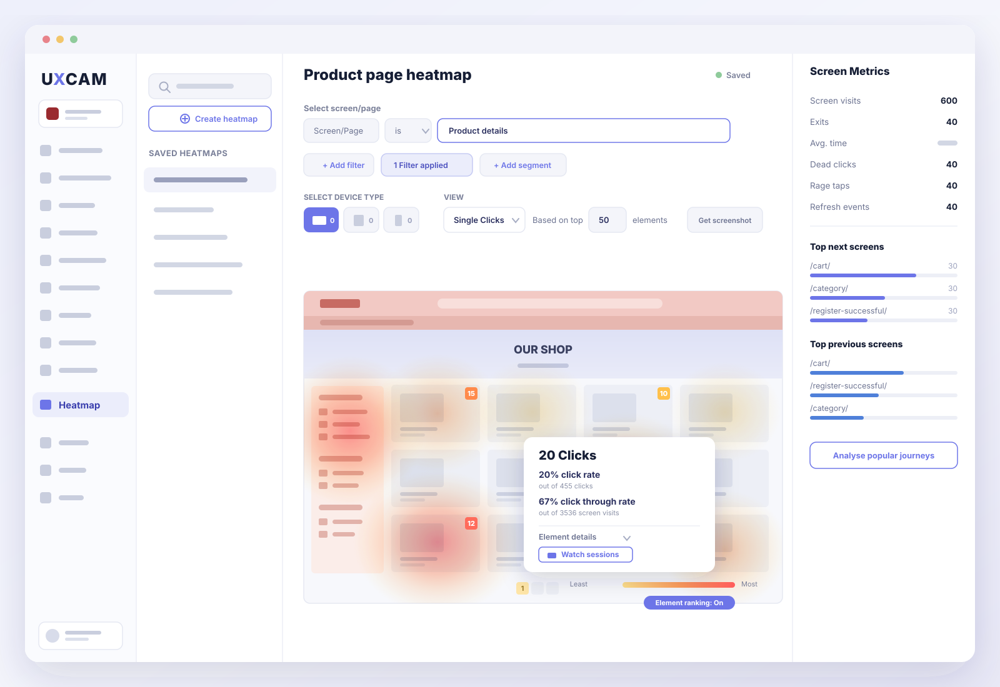
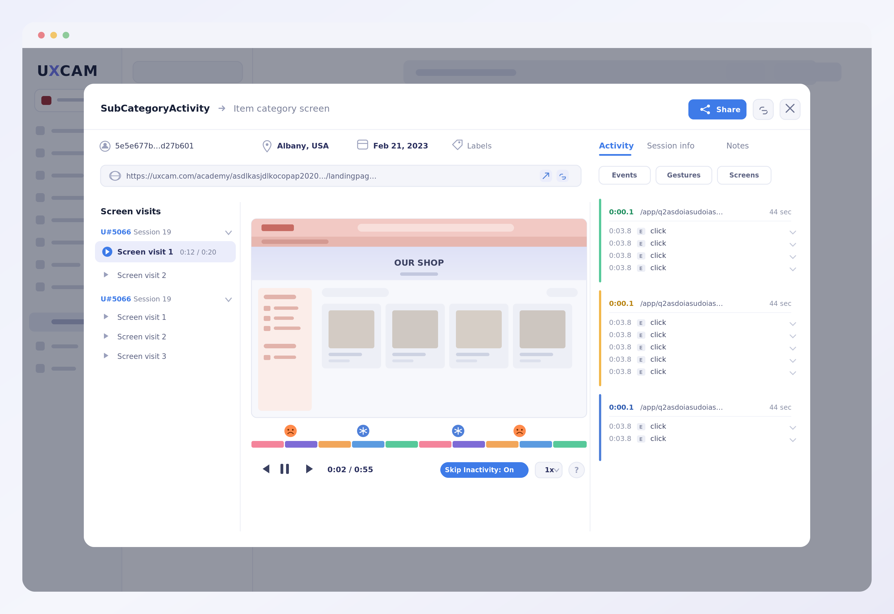
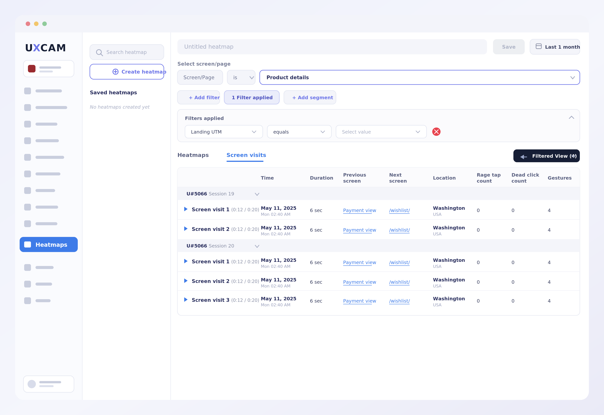

Heatmaps + Screen Analytics for Web
Visually explore how users interact with your pages. See what they click, where they get stuck, and what they ignore.

Overview
UXCam expanded from mobile-only analytics to support web. Heatmaps were a core feature that needed to be rethought for a fundamentally different context. Web pages are dynamic, responsive, and structurally more complex than mobile screens.
I designed the end-to-end experience for creating, viewing, and acting on heatmap data for web. From analyzing page performance to element-level insights, all accessible with just a few clicks.
The Challenge
Translating heatmaps from mobile to web wasn't a simple port. The problems ran deeper:
- Web pages have variable layouts across breakpoints and viewport sizes
- Dynamic content like SPAs and lazy-loaded elements complicate page capture
- Users needed to understand page performance at a glance before diving into details
- The system had to surface actionable insights, not just raw data

What Users Can Do
Understand page performance at a glance
A clear, visual breakdown of interaction patterns, exit and bounce rates, time on page, and frustration signals. No digging through tables or dashboards.
Replay individual sessions
Watch exactly how a user navigated a page. The session replay shows screen visits, playback with a color-coded timeline, and a timestamped log of every click, gesture, and navigation event.
Compare CTA performance
Spot which buttons drive more conversions. Compare elements like "Talk to us" vs "Start trial" to make data-driven decisions about placement and copy.
Detect what users are missing
Find out if important features or content are being completely overlooked. Act fast to fix visibility issues before they impact conversion.

Drill into screen-level data
The screen visits view shows every session that visited a specific page, with duration, previous and next screens, location, rage tap counts, dead click counts, and gesture data. Filter by segment, UTM, or custom properties for targeted analysis.
Surface hidden friction points
Identify sessions with the most rage clicks and dead clicks. These frustration signals point directly to UX problems that quantitative data alone would miss.
Design Decisions
The design had to serve two audiences: product managers who want quick answers and analysts who need granular control. Progressive disclosure was central to the approach.
Page-level metrics are front and center for quick evaluation. One click deeper reveals element-level data with click rates, click-through rates, and the ability to watch specific sessions. Each layer adds detail without overwhelming the previous one.
Heatmaps can be created using the URL path automatically captured by UXCam, making setup instant. For teams that need more control, defining custom pages and properties enables deeper screen and heatmap analytics.
Outcome
Heatmaps + Screen Analytics for Web shipped as a key differentiator in UXCam's web product. The feature is available to all plans with heatmap access in their subscription, extending naturally from mobile to web.
The progressive complexity model worked as intended — new users get value immediately from page-level views, while power users leverage the full depth of element-level analysis and journey mapping.